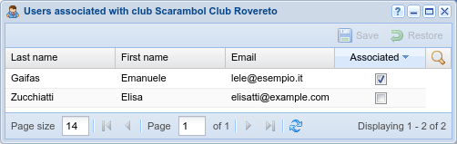

Club's users association management¶
In SoL, an user may create new championships, ratings and tournaments related to the
clubs he owns (that usually means the ones created by him). In some cases, in particular for
federations, it may be desirable to permit this for other users as well.
By right clicking on a particular row of the Clubs management table, the owner of the club (or the administrator) will find a Users action that opens the following window:

Club's users management¶
It lists all confirmed users, with a checkbox next to each one that tells whether the user is currently associated with the club or not: as said, only the checked ones will be able to create, say, a new tournament linked to the club.